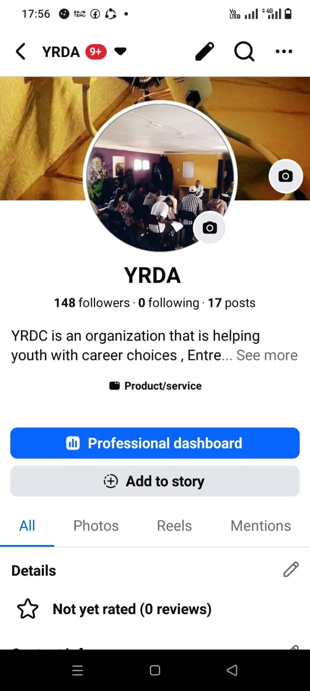
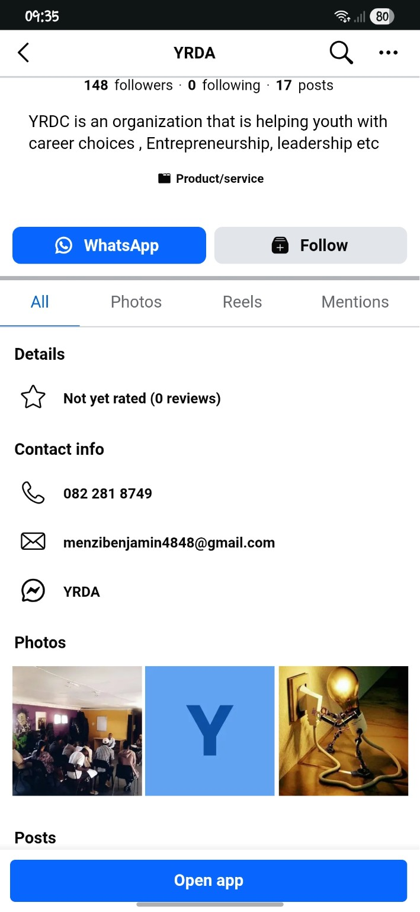
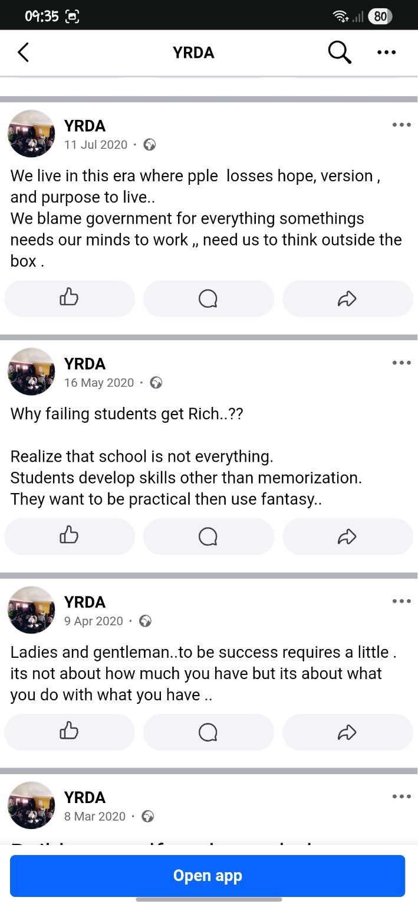

Career Choices
Explore career pathways, make informed decisions and understand the world of work.
Learn more →YRDC is an organization supporting youth through career choices, entrepreneurship, leadership development, practical learning and opportunities to grow.

YRDC focuses on the real-world skills and support young people need to make informed choices and pursue meaningful opportunities.
Explore career pathways, make informed decisions and understand the world of work.
Learn more →Build practical thinking, initiative and the confidence to turn ideas into action.
Explore →Develop communication, responsibility, teamwork and leadership skills for the future.
Discover →Access a growing collection of learning resources designed to help young people develop practical knowledge, career awareness and entrepreneurial thinking.
Enter the Learning Hub

Support YRDC through donations, volunteering or partnerships.